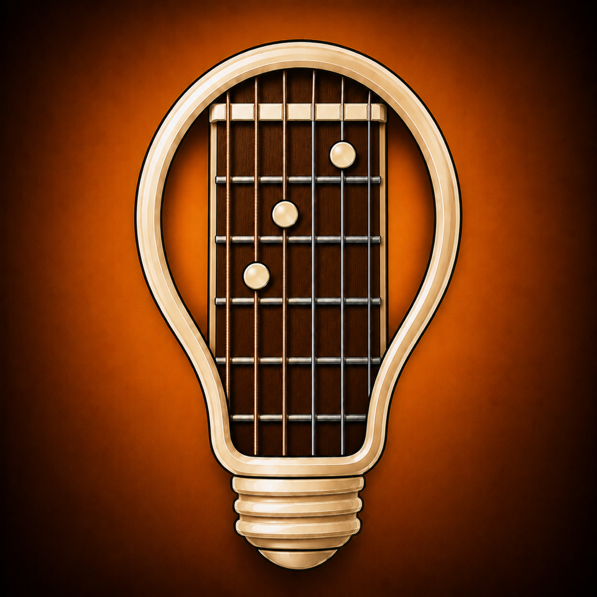
Music and songwriting
StrumScribe
Write songs, not prompts.
A practical songwriting workspace with offline word tools, music theory, guitar chords, progressions, tuners, a metronome, and a place to capture lyric, chord, and audio ideas.
Full app information ↗Explore StrumScribe
Inside StrumScribe
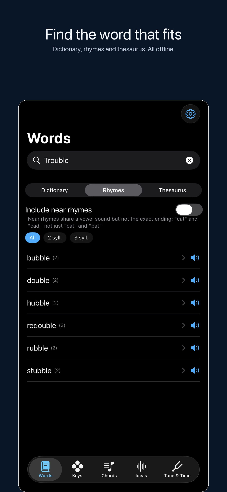
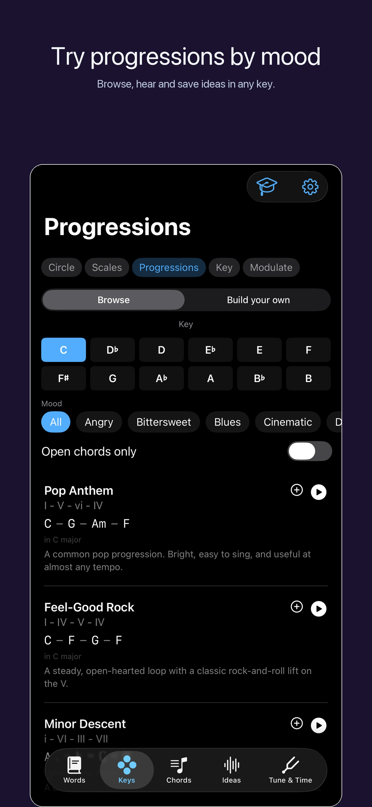
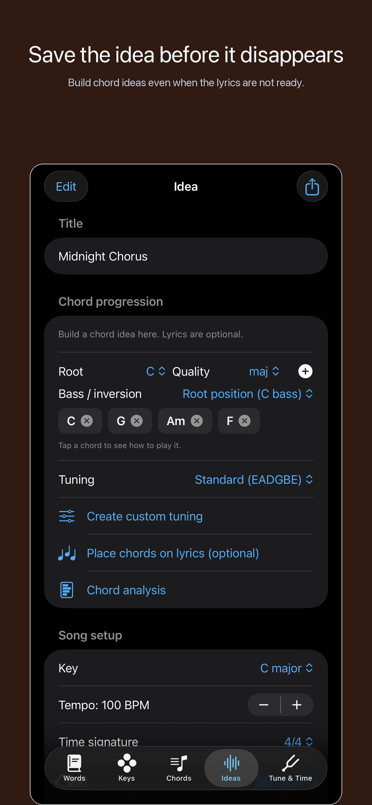
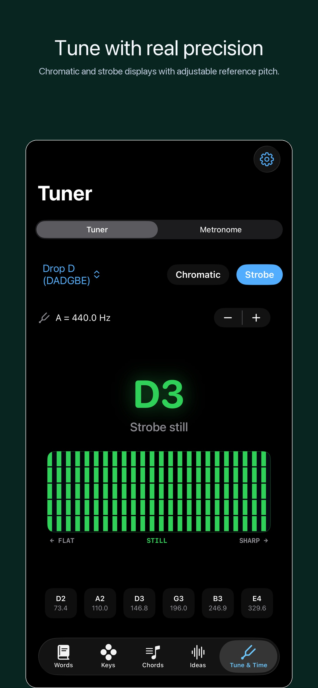
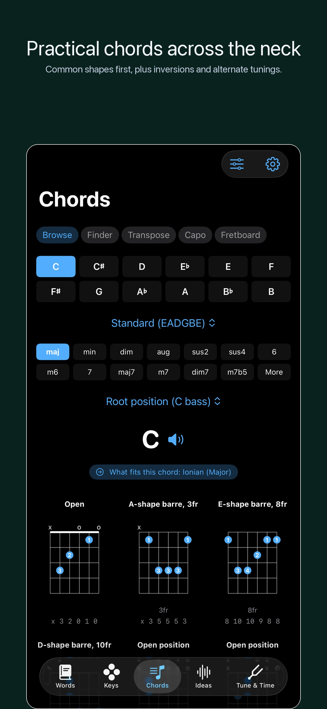
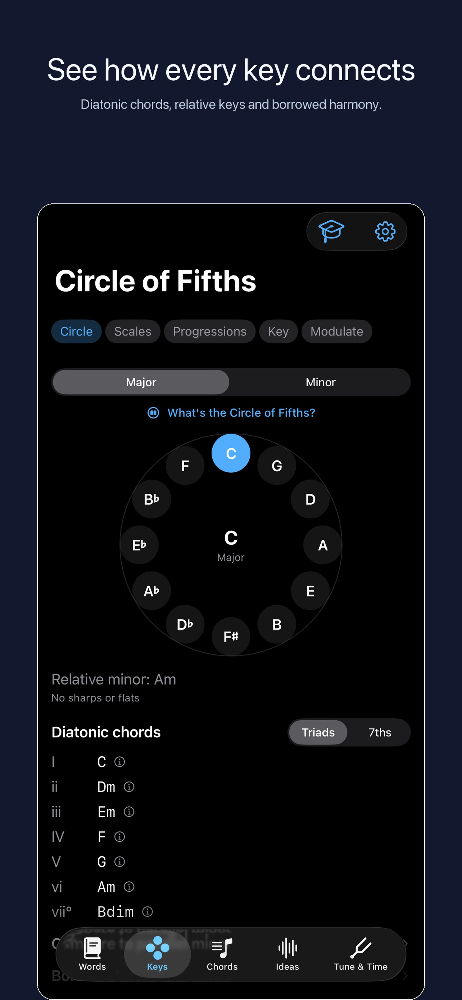
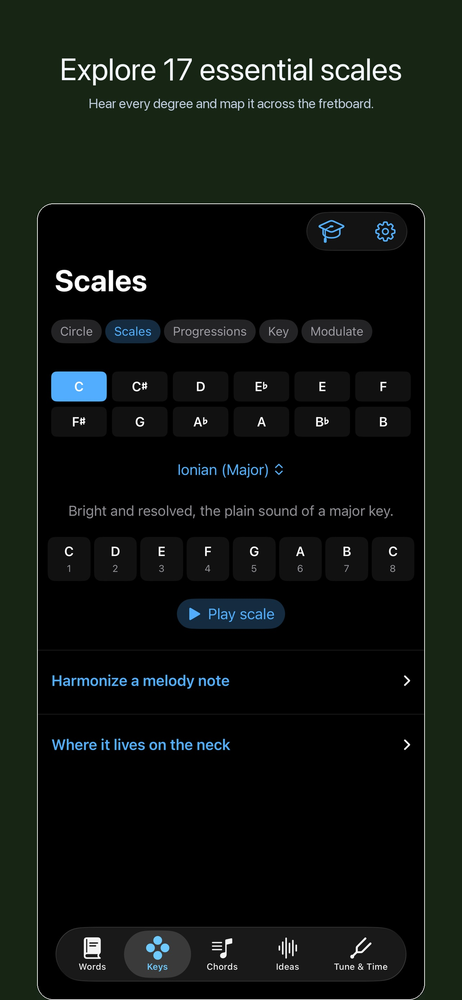
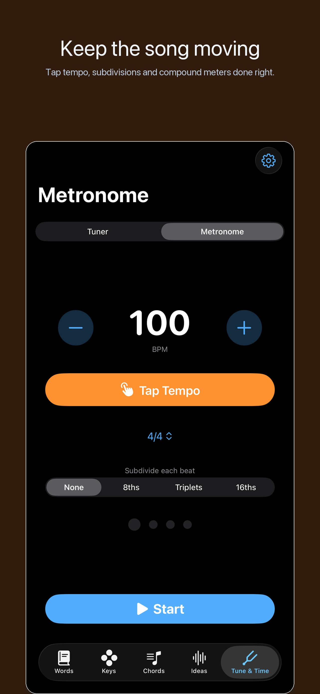
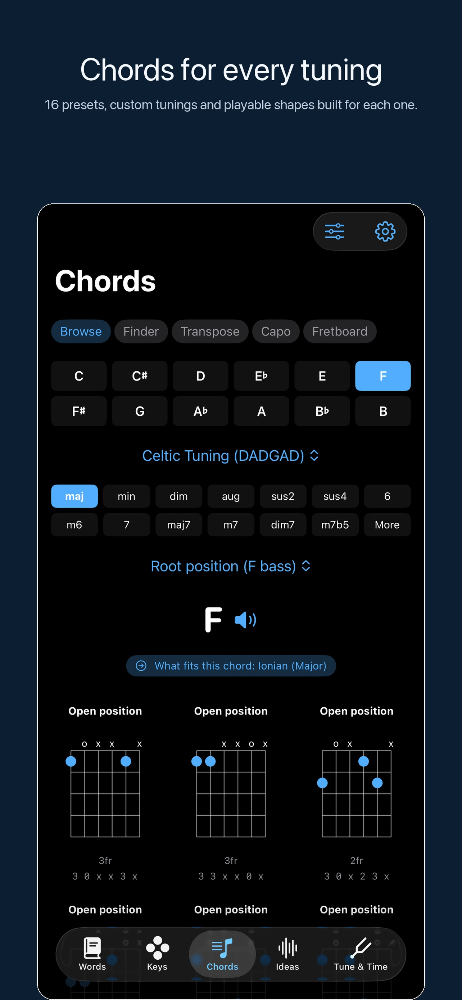
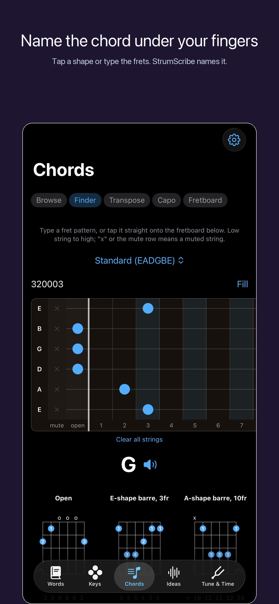